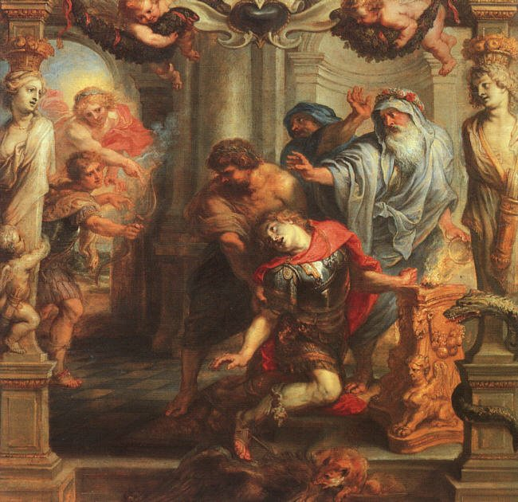
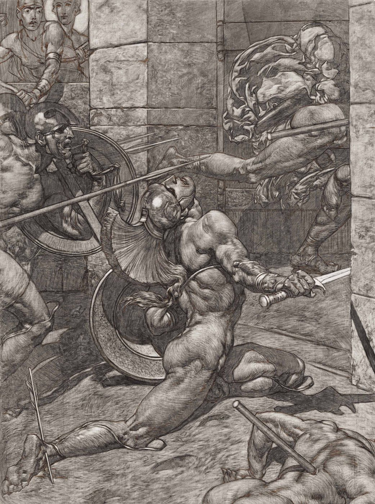
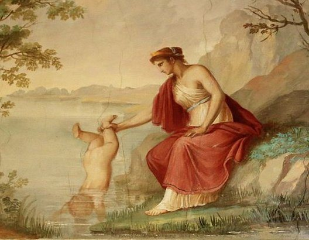
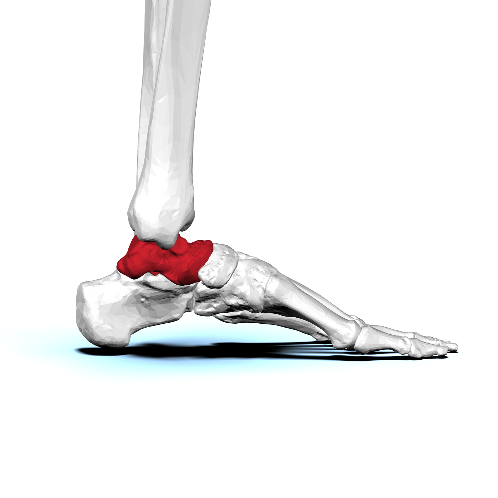

À partir de l'expression « talon d'Achille », les élèves enquêtent sur une histoire connue :
que racontent les récits anciens, que montrent les images plus tardives, et pourquoi faut-il
vérifier les sources avant de conclure ?
Âge
8-12 ans
Durée
45 à 60 min
Format
Classe ou musée
Matériel
Récit, cartes, images
Statut : prototype imprimable. Les images intégrées sont publiables, mais le corpus antique
directement lié à Achille reste à documenter avant publication.
Résumé
Les élèves comparent trois niveaux : un récit ancien qui ne contient pas toutes les versions
connues aujourd'hui, des traditions plus tardives autour de l'invulnérabilité d'Achille, et
des images modernes qui donnent souvent beaucoup de force au « talon d'Achille ».
Ce que les élèves découvrent
Une expression familière peut cacher une histoire complexe.
Une image n'est pas automatiquement une preuve du récit ancien.
Les traditions tardives peuvent transformer un personnage connu.
Le mot talus ouvre une discussion prudente sur le talus ou astragale.
Une conclusion historique doit dire ce qui est sûr, probable ou à vérifier.
Réussite attendue
À la fin de l'activité, l'élève doit pouvoir distinguer un récit ancien, une tradition tardive et une image moderne.
Il doit aussi pouvoir expliquer qu'une image moderne peut représenter une tradition sans prouver directement
ce que racontaient les récits les plus anciens.
Trois temps pour comprendre
1
Récits anciens
Les récits grecs les plus anciens ne racontent pas simplement l'histoire moderne du talon
rendu vulnérable par Thétis.
2
Traditions tardives
Plus tard, notamment dans des traditions latines et postérieures, l'épisode de l'enfant
rendu invincible devient plus présent.
3
Images modernes
Des œuvres bien plus récentes illustrent Achille, Thétis ou la mort du héros. Elles sont
utiles pour observer une tradition, pas pour prouver à elles seules le récit de départ.
Déroulement recommandé en classe
1Partir de l'expression
Demander ce que signifie « talon d'Achille » aujourd'hui et noter les idées initiales.
2Lire ou raconter
Présenter le récit d'ouverture comme support pédagogique, sans le confondre avec une source antique.
3Trier les documents
Les élèves classent les cartes ou images en trois catégories : récit ancien, tradition tardive, image moderne.
4Questionner les images
Pour chaque image : qui l'a produite, quand, et que montre-t-elle exactement ?
5Formuler une conclusion
Les élèves rédigent une phrase expliquant que l'histoire connue aujourd'hui résulte de transformations successives.
Adaptation musée
En musée, l'activité peut devenir une discussion courte autour d'une image, d'une œuvre ou d'un objet lié à Achille.
Le médiateur n'a pas besoin de dérouler toute la chronologie : il peut faire comparer deux documents contrastés,
par exemple une œuvre moderne et une source ou notice plus ancienne.
Questions utiles : « Est-ce une source ancienne ou une représentation plus tardive ? », « Que montre l'image ? »,
« Que ne peut-elle pas prouver à elle seule ? ».
Galerie commentée
Chaque image ci-dessous porte son statut. Les élèves doivent apprendre à demander : qui a produit
ce document, quand, pour raconter quoi ?
Tradition tardive représentée au XVIIIe siècle : Thétis plonge Achille dans l'eau.
Antoine Borel, domaine public, via Wikimedia Commons.

Œuvre moderne : la mort d'Achille est mise en image bien après les récits anciens.
D'après Peter Paul Rubens, domaine public, via Wikimedia Commons.

Œuvre moderne : une autre manière de visualiser la fin d'Achille.
Alexander Rothaug, domaine public, via Wikimedia Commons.

Illustration contemporaine explicative : utile pour discuter, mais ce n'est pas une source antique.
Sasanian1111, CC BY-SA 4.0, via Wikimedia Commons.

Appui anatomique : le talus, aussi appelé astragale dans ce projet, n'est pas le talon visible.
BodyParts3D / DBCLS, CC BY-SA 2.1 JP, via Wikimedia Commons.
Points de vigilance
On peut dire que la version actuelle du « talon d'Achille » est le résultat d'une transformation
de traditions et d'interprétations. On ne doit pas dire qu'une peinture moderne prouve directement
ce que racontaient les récits grecs les plus anciens.
Le lien entre talus, talon et astragale doit rester prudent : il aide à ouvrir une enquête
sur les mots, le corps et les images, sans réduire l'histoire à une simple erreur de traduction.
Documents imprimables
Ces pages HTML peuvent être imprimées ou enregistrées localement.
Fiche élève - trier les versions et observer les imagesOuvrir la fiche
Guide enseignant - déroulement, sources et prudenceOuvrir le guide
Version actuelle : activité testable avec des images publiables et des formulations prudentes.
Elle permet déjà de travailler la distinction entre source, tradition et représentation.
Objectif final : compléter le corpus avec quelques cartes-sources validées, adaptées aux enfants,
pour distinguer clairement ce que disent les récits anciens, ce que les traditions tardives ajoutent et ce que
les images modernes représentent.
Ressources encore à compléter
Une image antique directement liée aux blessures ou à la mort d'Achille reste à publier seulement
après identification précise de la page source, de l'institution, de la licence et de l'attribution.
Les figures d'articles ou d'ouvrages récents restent hors publication dans cette version.
Sources et appuis
Barbara Carè, From the astragalus to the heel: revisiting the anatomy of Achilles'
mythical invulnerability, source scientifique adulte pour la nuance entre astragale, talus et talon.
Récit d'ouverture du projet : Le petit os d'Achille,
support pédagogique, non source antique.
Crédits images : Antoine Borel; d'après Peter Paul Rubens; Alexander Rothaug; Sasanian1111; BodyParts3D / DBCLS.